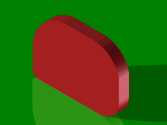
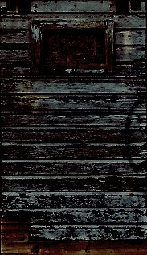
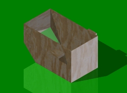
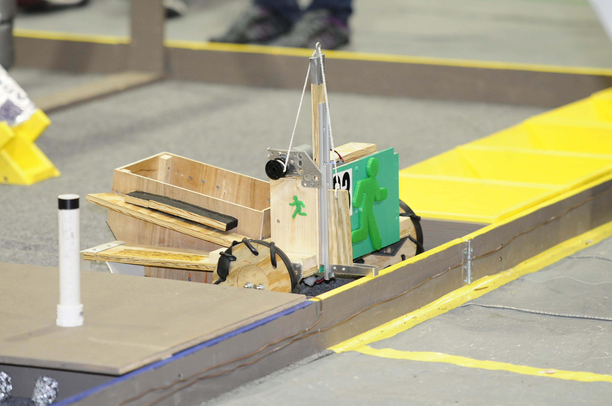
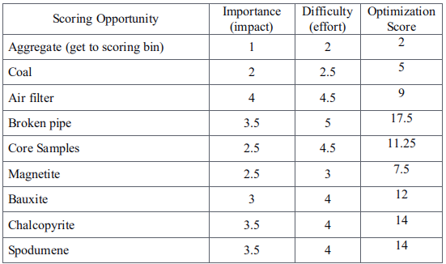
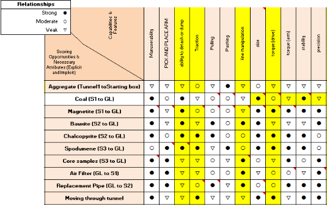

Welcome to the Mine
A hazardous mining location with high concentrations of ore was purchased by BEST this year. This mine required a robot to attain these precious resources.
A hazardous mining location with high concentrations of ore was purchased by BEST this year. This mine required a robot to attain these precious resources.
The mining location is divided into 4 shafts for each team. Each shaft is divided into 4 sections: ground floor, sublevel 1, sublevel 2, and sublevel 3.

Goldilocks is a robot designed to safely retrieve various minerals from a hazardous mine.
Composed of mechanisms such as a winch and a cam, as well as various subassemblies for transporting materials, Goldilocks is designed to navigate through several sublevels in less than adequate conditions. Our product efficiently and consistently retrieves coal, magnetite, chalcopyrite, and aggregate.

Dimensions for the drive base were chosen for maximum maneuverability through the mine and subsequent tunnels. The dimensions of the notch, or U design, were calculated during the brainstorming and design phase by estimating the height of the robot and then calculating the width of the copper cart at that height. A measure of clearance was added to give the driver a margin of error. A chamfer on the small-u decreases the precision needed for the driver to obtain the carts.
Superior in its stability and power to other designs, the cam is a curved rotating mechanical linkage that is used to convert rotary motion to linear motion. It is a simple, effective way of manipulating the small U to lift the copper cart and clear the tunnels. The cam, built out of wood using a CNC router, is secured with a setscrew that allows the cam to be securely powered by the motor mounted on a VEX motor mount. Located in the front of the small U, the cam rotates, lifting the small-u and forcing the copper cart up. A small block of wood was used to restrict the angular motion to ensure continued support for the small-u and copper cart. Operating the cam only requires one motor, leaving more motors free for other parts of the robot.
The lift is made out of a block of wood, slider, and a metal band. The cradle-like design goes under the magnetite pipe, tilting it up as the lift rises. For the lift to move up and down, a motor is attached to a winch. One end of the string from the winch, threaded through an eyebolt, is attached to the wooden block, and then the motor and winch are secured on top of the electrical box using a VEX motor mount. Powerful and efficient, the lift and winch are simple and effective solutions to the problem.
The most efficient method to retrieve materials from the hazardous mine would be with a cart. The provided copper cart is used for the chalcopyrite, while the magnetite and coal are gathered into a smaller, lighter, custom-built cart. This subassembly cart, otherwise known as the smaller cart, is used primarily for the magnetite. The subassembly cart is lighter compared to the copper cart and slides smoothly over uneven parts of the field as the front and bottom is made out of pieces of polycarbonate, a clear strong plastic, and the front is angled.
To maximize the value and effectiveness of our product, we analyzed the problem, and prioritized tasks by cross-referencing the importance of each task to the overall problem, and the level of difficulty to determine the most efficient use of the limited time we have, as shown in the table below.
After the optimization of tasks, we used a Quality Function Deployment chart to determine the most important robot attributes for each task to assist in the design of the robot as seen below.
Our product, Goldilocks, performed well when tested under competition conditions. The robot was tested at the GA BEST hub competition on October 24th. During the weeks leading up to the competition, the robot was designed and constructed, and our drivers were able to practice the robot on a replica of the field in order to hone their skills and perfect their strategy. With this, our drivers were able to perform well and have the most efficient strategy prepared going into the competition. Given our observations of the robot’s performance at the competition, we made various improvements on the robot that allowed us to improve the robot’s efficiency, enhance our robot’s abilities, and increase the value of our product as a robot capable of mining the materials.